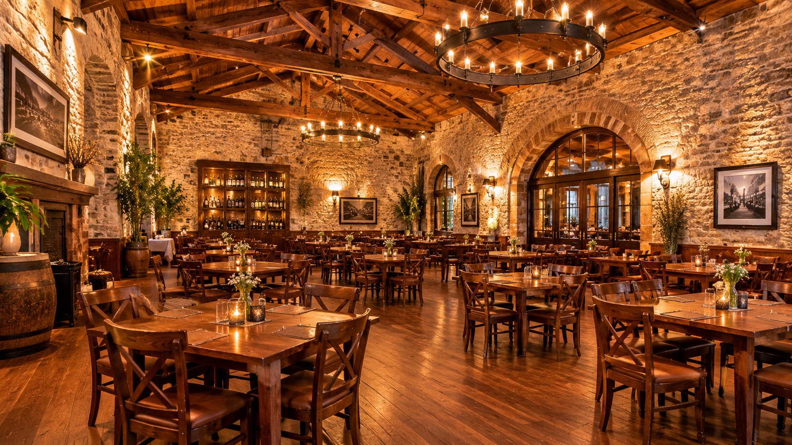

Sobre nosotros y legal
Sobre nosotros
Oro Viejo nace en Gijón con una idea sencilla: servir la cocina de siempre con la mirada de quien la reinventa con respeto. Nuestra carta parte de recetas tradicionales asturianas, como el cachopo, las croquetas o el rabo de toro, y las pone al día con técnica y mucho cuidado.
Nuestro equipo elige cada mañana el producto de temporada y lo trabaja sin artificios, a fuego lento y sin prisas, para que cada plato sepa a casa y a la vez sorprenda. Todo en un ambiente cálido y elegante, pensado para compartir la mesa. Oro Viejo forma parte de DIW&CO Restaurantes.

Política de privacidad
En Oro Viejo tratamos los datos personales facilitados a través de nuestros formularios de reserva, pedido online y contacto únicamente con la finalidad de gestionar tu solicitud, confirmar tu mesa o atender tus consultas.
No cedemos tus datos a terceros salvo obligación legal y puedes ejercer en cualquier momento tus derechos de acceso, rectificación o supresión escribiendo a oroviejo@gmail.com.
Aviso legal
Titular del sitio web: Restaurante Oro Viejo.
Domicilio social en San Bernardo 73, 33201 Gijón, Asturias.
Todos los textos, precios, direcciones y datos de contacto mostrados en esta web tienen carácter meramente ilustrativo y no corresponden a un establecimiento comercial real.